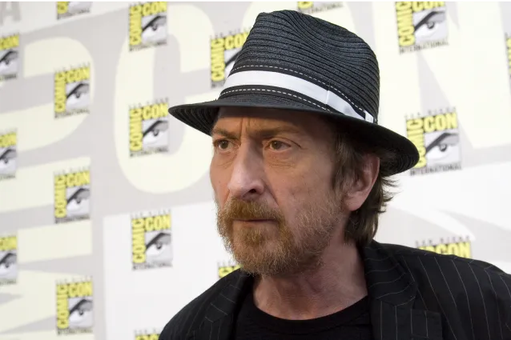
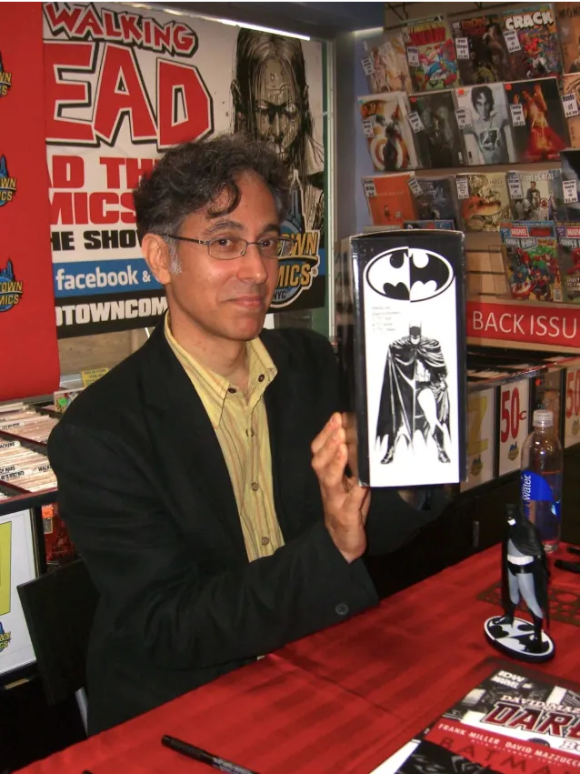
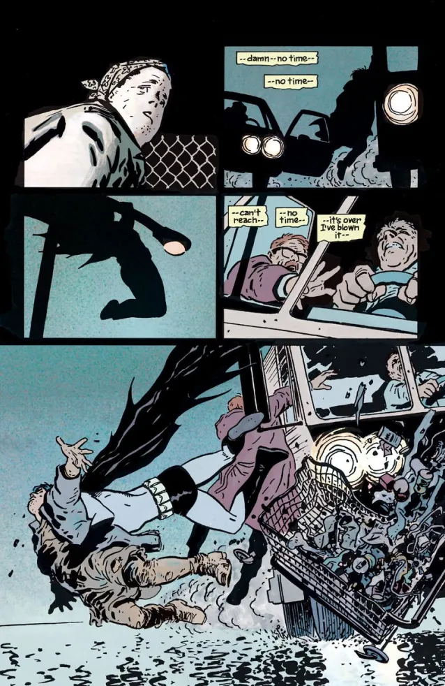
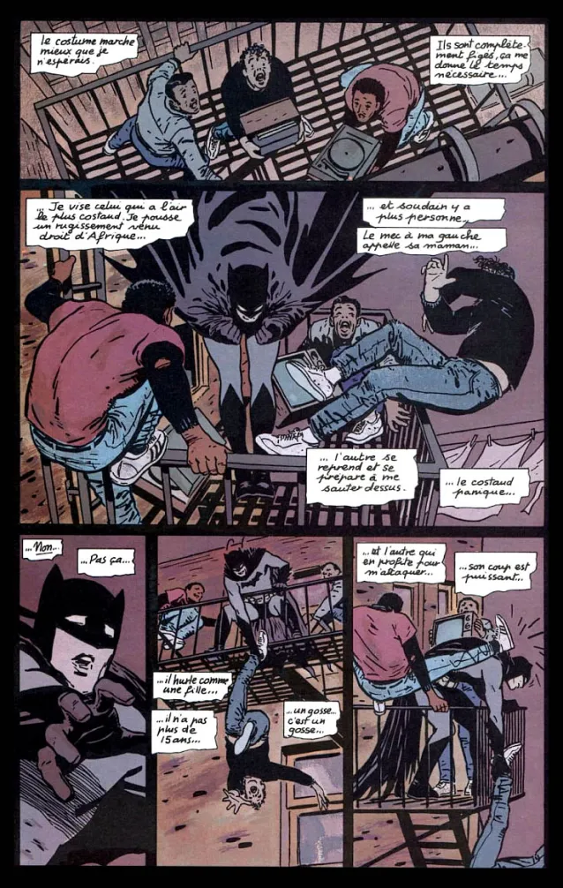
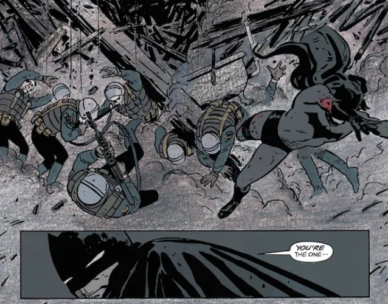
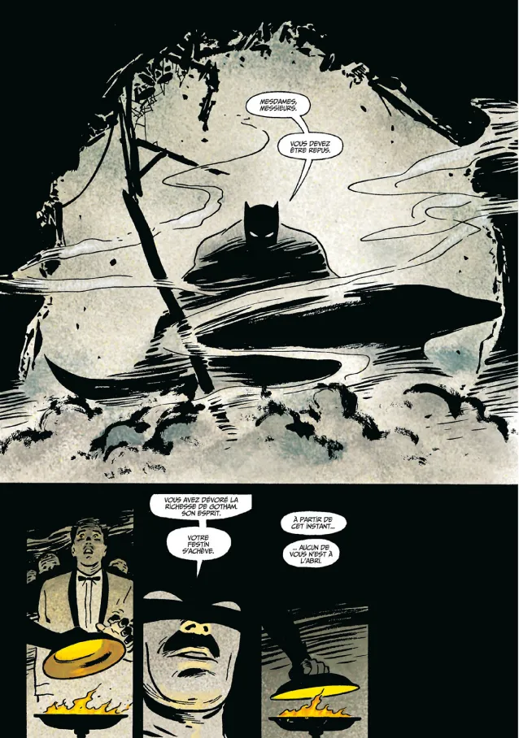
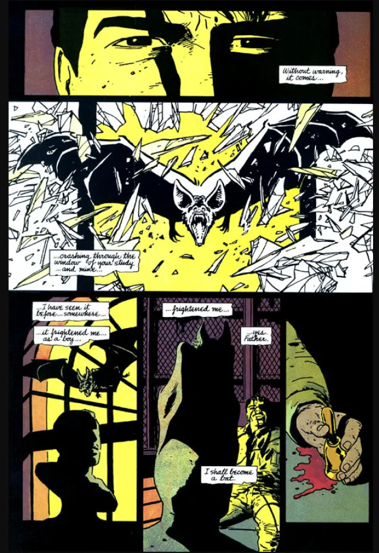

The Two Geniuses
Batman year one
is the must-have masterpiece from Frank Miller and David Mazzucchelli,
both of whom have done a stellar job on this comic, which is for all Batman fans something you absolutely must have in your comic collection.
Frank Miller
David Mazzucchelli

Batman year one
is a retelling of the origins of Batman with Frank Miller doing the storytelling and David Mazzucchelli
coming in to enhance the comic with some amazing illustration and artwork.
Here are some of the plates that David Mazzucchelli drew :
Batman year one comic book panel
Batman year one comic book panel
Batman year one comic book panel
A source of inspiration even for the greatest.
This Batman year one
comic is considered by many to be the best Batman origin.
Christopher Nolan was inspired by it for his movie : Batman Begins
and more recently, Matt Reeves also found inspiration in this comic for his movie :
The Batman
but they are not the only ones. Many others have found inspiration and continue to be inspired by this comic that Frank Miller wrote to define Batman.
My opinion
I have known Batman through the different movies that Christopher Nolan has made, but I wanted to discover more about the knight of Gotham,
so I did some research on this hero. I came across many videos of enthusiasts who recommended different comics in order to begin to discover or rediscover
the origins of Batman, the comic that attracted me the most was Batman year one
.
Batman year one comic book panel
I was astonished by the story that Frank Miller offered us, because we enter the concrete from the beginning and are met with the darkness of the character. We discover throughout the reading an intriguing and mysterious Batman, and the drawings of David Mazzucchelli which are very minimalist, technical and mastered I found this to be incredible and it's this comic that gave me the desire to buy more and discover other stories on Batman.
Batman year one comic book panel
Batman year one comic book panel
I can only recommend it because I think it's the perfect comic to start the Batman story.